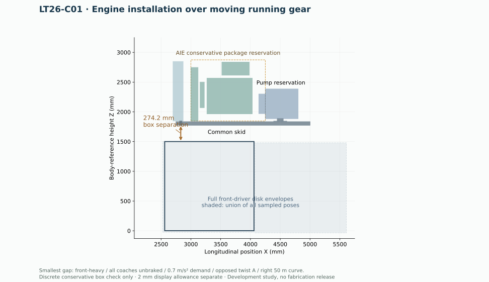
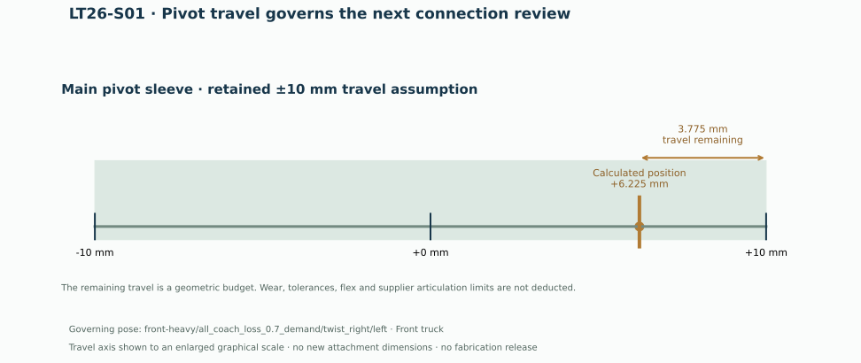

Installation fit
The represented engine, pump, cooler and support boxes remain separated from moving running gear at every sampled pose. Actual supplier protrusions, hoses and brackets still need their own fit checks.
LT26 · INSTALLATION & CONTROLS
Installation drawings and model → · Proposed brake circuit → · Checks and remaining holds →
CURRENT MOTION STUDY · LT26
Tony’s Kubota package stays on the common skid while the running gear steers and the suspension moves. LT26 maps the revised installation loads into the model on straight track and both directions of the 50 m target curve.
The engine, pump, one-fan layout, body profile and wheel locations retain LT25 geometry. These sheets add the movement evidence and identify the next connection constraint.


The represented engine, pump, cooler and support boxes remain separated from moving running gear at every sampled pose. Actual supplier protrusions, hoses and brackets still need their own fit checks.
Resolve pivot-slide tolerance and bearing articulation, then use supplier brake and bumper data to finish the attachment loads. Small load-to-CAD contact residuals remain visible in the engineering record.
Brake-failure poses are demand studies. A geometric fit does not prove the train can stop or pull under that load. The viewer labels cases that exceed assumed adhesion or the provisional brake target.